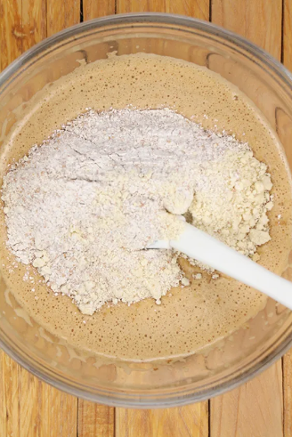

Volver a página inicial
Postre: Carrot Cake
Tabla de contenidos
Ingredientes para el bizcocho
- 300g de zanahorias
- 200g de harina
- 200g de azúcar moreno
- 3 huevos
- 100 mililitros de aceite de girasol
- 2 cucharadas de levadura en polvo
- 1 cucharada de canela
- 1 cucharada de jengibre
- Sal
- Bicarbonato
Ingredientes para el glaseado
- 60g de mantequilla a temperatura ambiente
- 225g de queso cremoso
- 110g de azúcar glas
- 3 gotas de extracto de vainilla
- Nueces
Paso a Paso
- Pelar y rallar las zanahorias
- Echar las zanahorias ralladas en un bol con la harina, el azúcar, la sal, el bicarbonato, la levadura y las especias.

- En otro cuenco, mezclar los ingredientes líquidos: los huevos, el aceite y la vainilla
- Incorporar la mezcla líquida con la zanahoria
- Remover hasta tener la masa y seguidamente, poner el molde
- Hornear durante 45 minutos a 150º
- Para finalizar de hacer el glaseado mezclar la mantequilla y el queso
Resultado Final